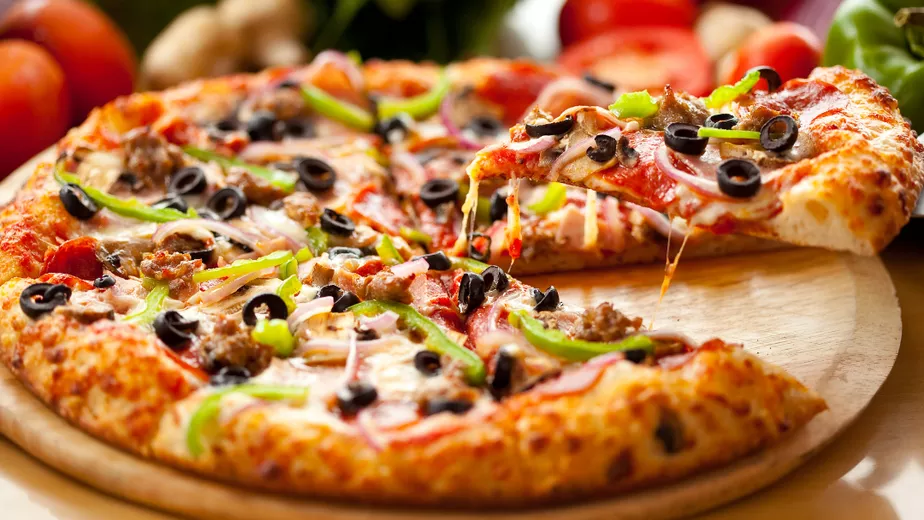

Pizza

Night's Best Friend!
Ingrendients
- 300g strong bread flour
- 1 tsp instant yeast (from a sachet or a tub)
- 1 tsp salt
- 1 tbsp olive oil, plus extra for drizzling
Steps
- Make the base: Put the flour into a large bowl, then stir in the yeast and salt. Make a well, pour in 200ml warm water and the olive oil and bring together with a wooden spoon until you have a soft, fairly wet dough. Turn onto a lightly floured surface and knead for 5 mins until smooth. Cover with a tea towel and set aside. You can leave the dough to rise if you like, but it’s not essential for a thin crust.
- Make the sauce: Mix the passata, basil and crushed garlic together, then season to taste. Leave to stand at room temperature while you get on with shaping the base.